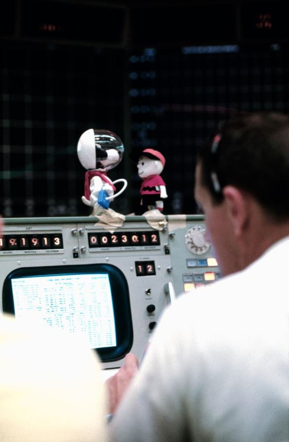
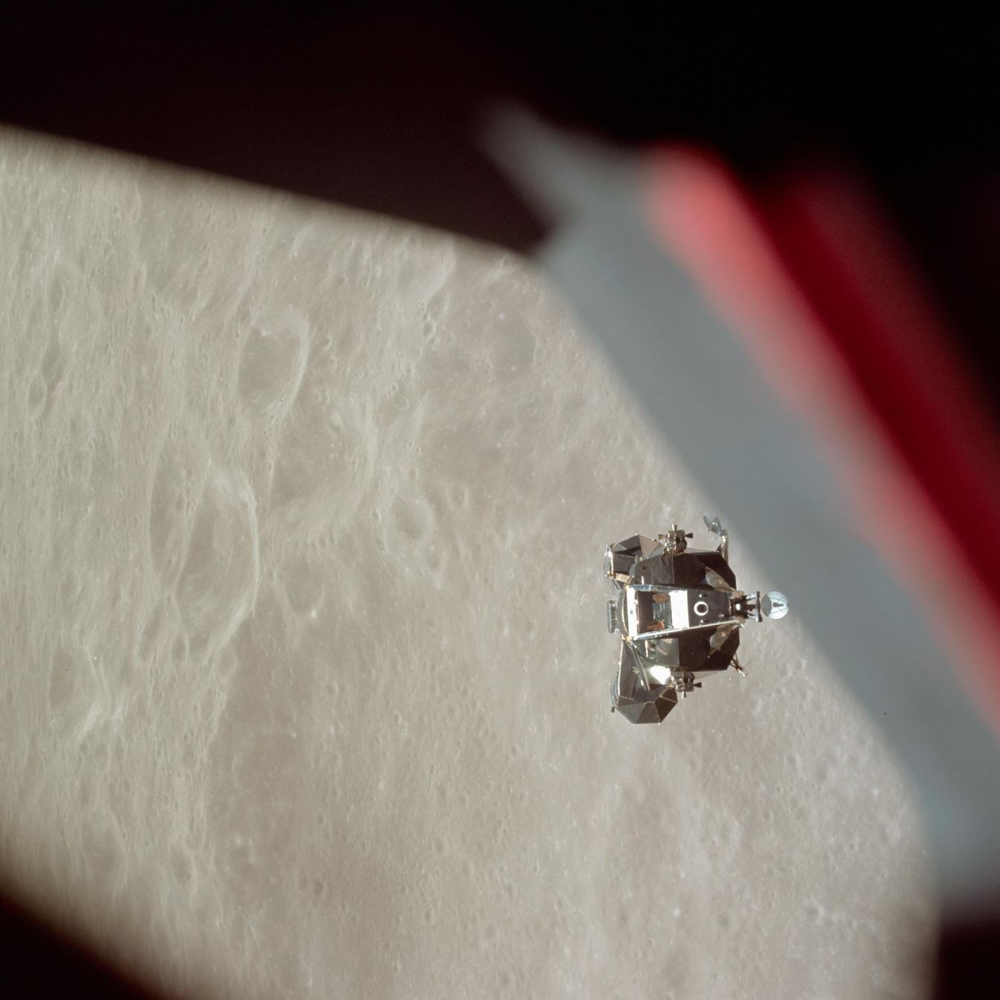
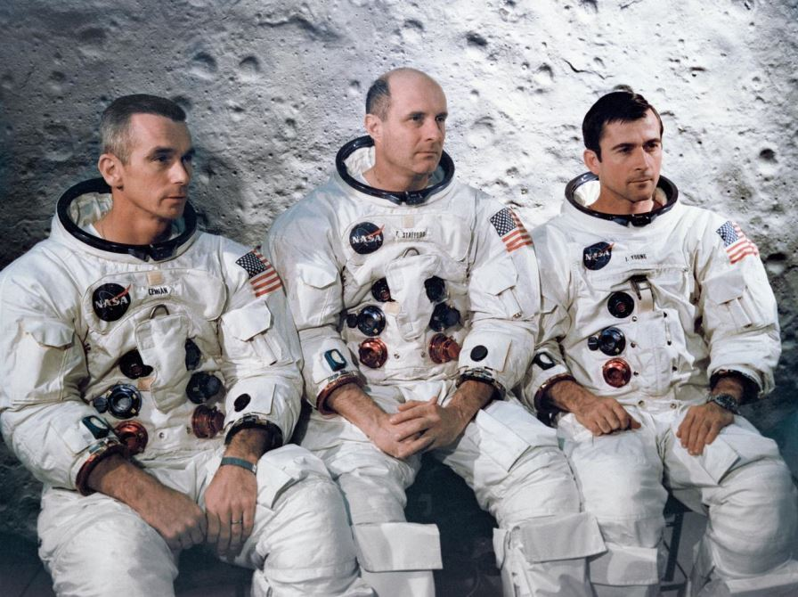
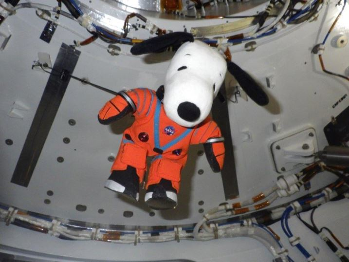

This is the story of the strangest partnership in spaceflight: the one between the American space agency and a comic-strip dog. It starts with a tragedy, runs through a lunar module named Snoopy, and ends — so far — with a plush beagle floating inside the Orion capsule on Artemis I. And Charles Schulz never asked NASA for a cent.
A safety award born from tragedy
On 27 January 1967, the crew of Apollo 1 — Gus Grissom, Ed White and Roger Chaffee — died in a fire during a ground test. The accident shook NASA to its foundations, and in the soul-searching that followed, the agency looked for ways to make safety personal. Al Chop, public-affairs director at the Manned Spacecraft Center in Houston, had the idea: NASA needed a mascot — something every worker, from welder to flight director, could recognise instantly. And there was only one candidate.
Snoopy. The world's most famous dog, and — in the comic strips — already dreaming of being an astronaut. When the syndicate hesitated, Chop went to Charles M. Schulz himself. Schulz, a lifelong supporter of the space program, agreed: NASA could use "Snoopy the Astronaut" royalty-free. He drew the image used for the pin, and produced poster art for the program. To this day, no one pays a cent for the beagle.
Thus was born the Silver Snoopy Award, first presented in 1968. Its rules make it unlike any corporate award: the pin is sterling silver, and every single one is flown in space before being awarded — the recipient's certificate names the mission their pin flew on. It is presented not by a manager but by a NASA astronaut, in person, at the recipient's workplace. It goes to fewer than 1% of eligible personnel, for work that kept a crew safe or a mission alive. Nearly 15,000 people had received one by 2016 — engineers, technicians, secretaries, the invisible army of human spaceflight.

Apollo 10 — Snoopy snoops the Moon
In May 1969, Snoopy went to the Moon for real — as a spacecraft. Apollo 10 (18–26 May 1969) was the dress rehearsal for the landing: everything except the touchdown itself. Its crew — Thomas Stafford, John Young and Eugene Cernan — chose the call signs: the lunar module would be "Snoopy", because it would "snoop around" the future Apollo 11 landing sites at low altitude; the command module would be "Charlie Brown", because that's who Snoopy belongs to. Schulz approved the names personally.
Snoopy did its job: Stafford and Cernan took the little lander down to 14.4 kilometres above the Sea of Tranquility — close enough to photograph the landing site — then fired the ascent stage and came home. Two months later, Apollo 11 landed on the ground Snoopy had snooped.
The official Apollo 10 mission patch does not show Snoopy — it shows a Roman numeral X on the lunar surface. There is no evidence a plush Snoopy flew aboard the mission (the famous Snoopy in the pre-launch walkout photo was held by a secretary — on the ground). And no record supports the claim that the crew named lunar craters "Snoopy" and "Charlie Brown" — those were the spacecraft call signs, not craters. What did happen: Snoopy and Charlie Brown dolls perched on a Mission Control console throughout the flight.



The strip that beat Apollo 11
While Stafford and Cernan were snooping the landing site, Snoopy had already been to the Moon — in the funny pages. On 8 March 1969, Schulz launched the "World-Famous Astronaut" sequence, in which Snoopy announced he would be the first beagle on the Moon. On 14 March 1969 — four months before Apollo 11 — he got there:
"I did it! I'm the first beagle on the moon! I beat the Russians… I beat everybody… I even beat that stupid cat who lives next door!" — Snoopy, Peanuts, 14 March 1969
Snoopy's space career had actually begun earlier, if more heroically than astronomically: the World War I Flying Ace persona debuted on 10 October 1965 — Snoopy atop his doghouse Sopwith Camel, forever pursuing the Red Baron. That bit of pop culture grew into a song that reached No. 2 on the Billboard charts over New Year 1966–67. A dog who fought the Red Baron was, naturally, a dog who could fly to the Moon.
Snoopy in space since
Silver Snoopy pins fly aboard Space Shuttle missions before being awarded — NASA's records place the first Snoopy flight on STS-32, Columbia, in 1990.
Astronaut Mike Massimino carries his childhood Snoopy aboard Shuttle Atlantis.
An eight-inch Astronaut Snoopy plush floats through the station, shown by Christina Koch and Jessica Meir during NBC's Thanksgiving broadcast.
Snoopy flies aboard Orion — in a miniature orange Orion Crew Survival System suit — and floats through the cabin when the capsule reaches orbit. Twenty-five days later, he splashes down safely.

The Omega connection
The award also has a watch on its wrist. In October 1970, NASA presented Omega with the Silver Snoopy Award for the Speedmaster's role in bringing Apollo 13 home — the watch that timed the famous 14-second burn. Omega has since honoured the beagle with several limited-edition "Silver Snoopy Award" Speedmasters. The full story lives on the NASA & Watches page.
Still flying today
The story is not nostalgia. NASA's 2025 Space Flight Awareness Program Plan still includes the Silver Snoopy Award, and astronauts presented pins at centres across the country through 2024 and 2025. In July 2018, NASA and Peanuts Worldwide signed a multi-year Space Act Agreement for STEM education — renewed by an annex in 2023 — keeping "Astronaut Snoopy" in classrooms. Fifty-seven years after a dog appeared on a silver pin, the beagle is still NASA's safety ambassador — the only cartoon character in history to have saved lives, flown to the Moon, and made it back for dinner.
The award Snoopy gave Omega was for a watch. The full watch story: NASA & Watches — or relive the mission Snoopy rehearsed: Apollo 11.